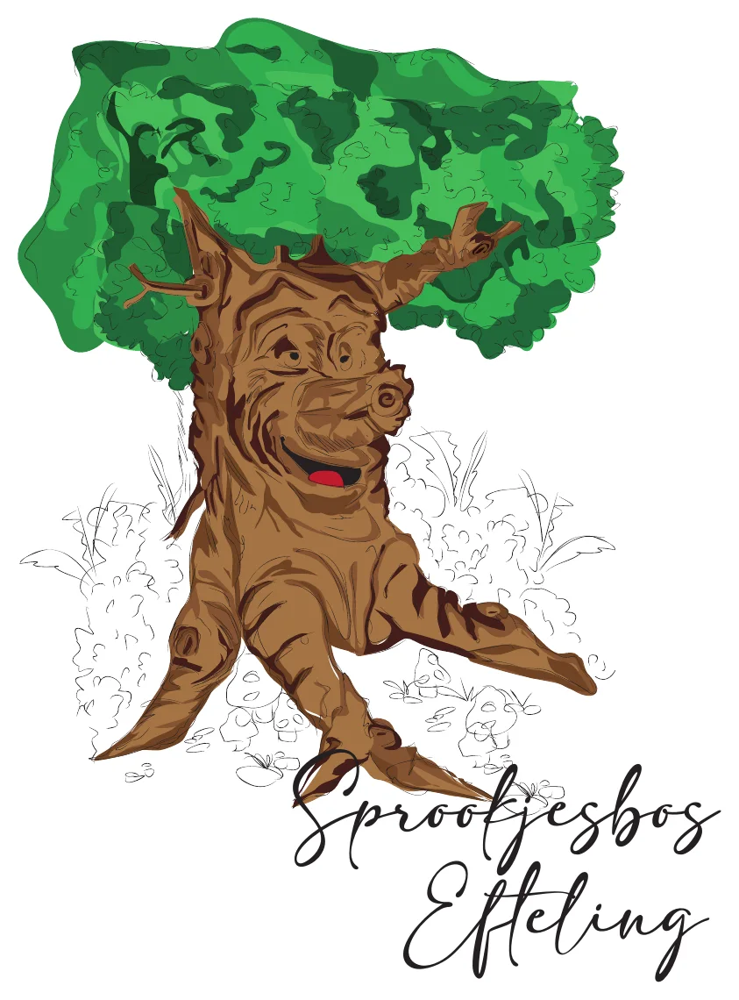
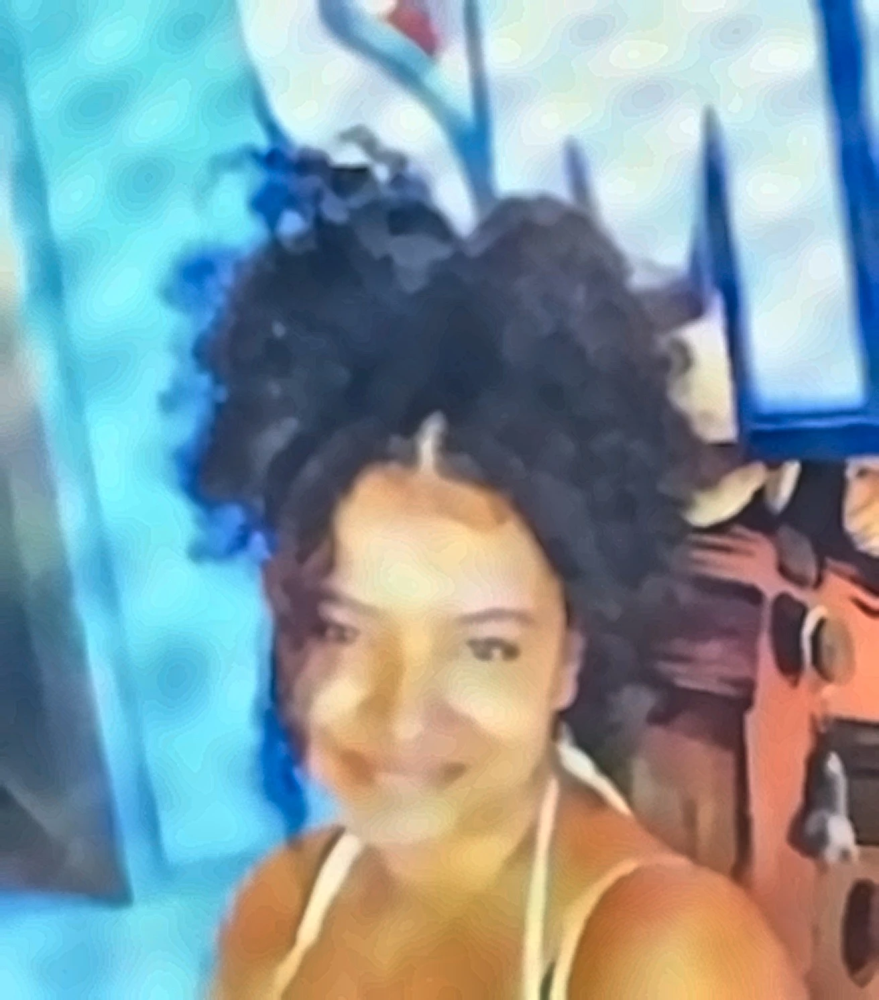
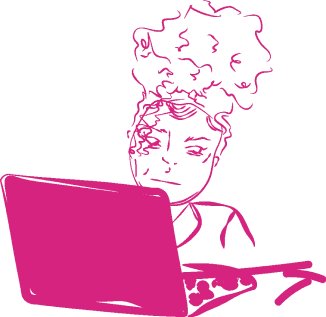
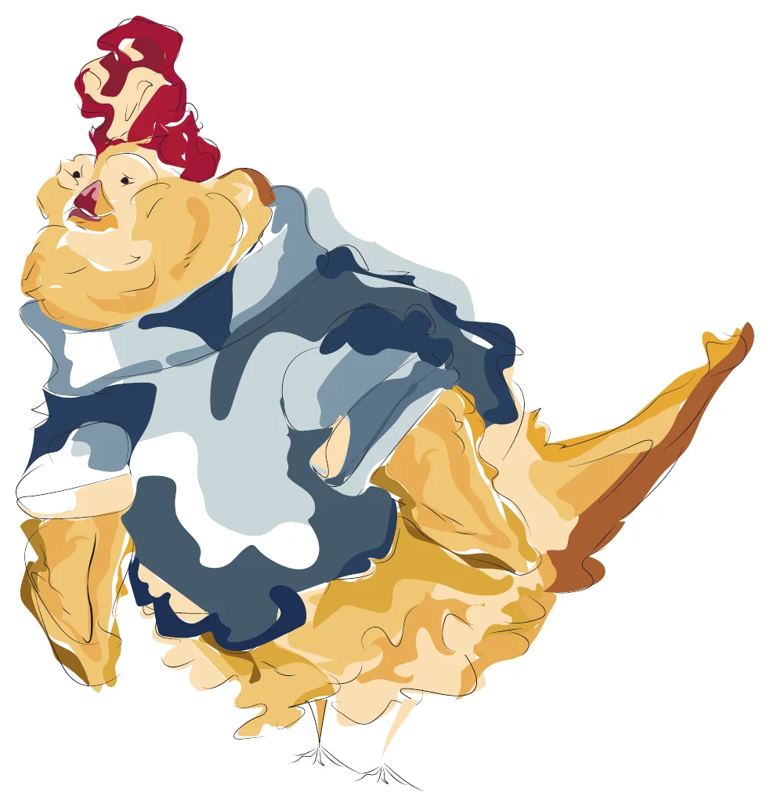
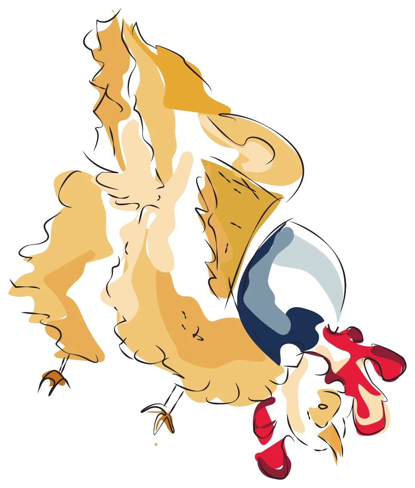
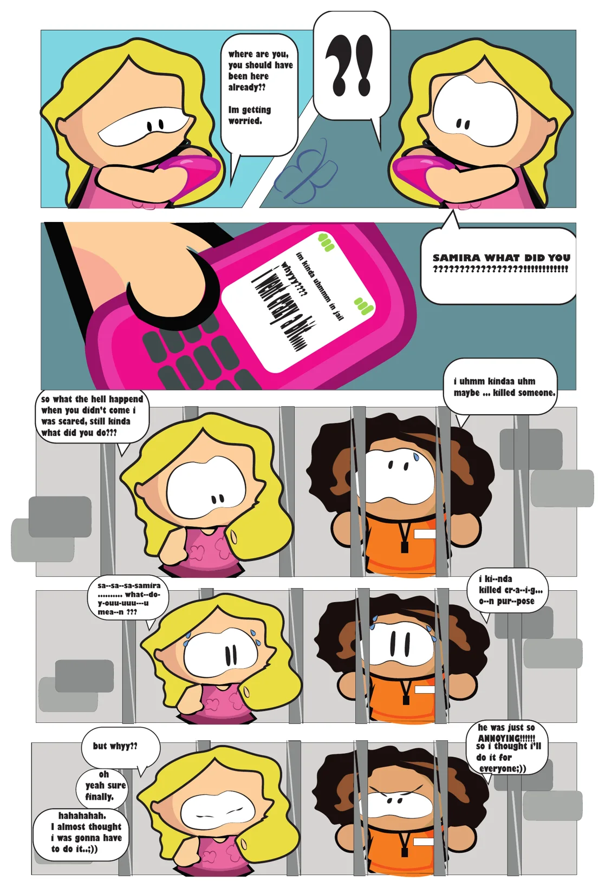

Sprookjesbos · Efteling
Een logo voor het Sprookjesbos: de pratende boom met een sierlijk script.

Ik ben een student designer en ik hou ervan om bezig te zijn met verschillende vormen van design. Van branding en grafisch ontwerp tot fotografie, illustratie, UI/UX en webdesign.
Ik vind het vooral leuk om te experimenteren met kleuren, typografie en verschillende stijlen om iets te maken dat echt een eigen gevoel heeft. Mijn schetsboek gaat overal mee: veel van mijn projecten beginnen met kleurpotlood of een snelle lijn op papier.
Ik leer nog elke dag bij en probeer in elk project iets nieuws uit.
Hier werk ik mee… Deze tools en ik? We hebben al wat meegemaakt. Klik maar!

Een paar losse projecten uit het middelbaar. Hier begon mijn liefde voor tekenen en vormgeven.

Een logo voor het Sprookjesbos: de pratende boom met een sierlijk script.


Getekende kippen als figuren voor het merk Chicken Kitchen.

Een digitale strip met een plotwending die je niet ziet aankomen.